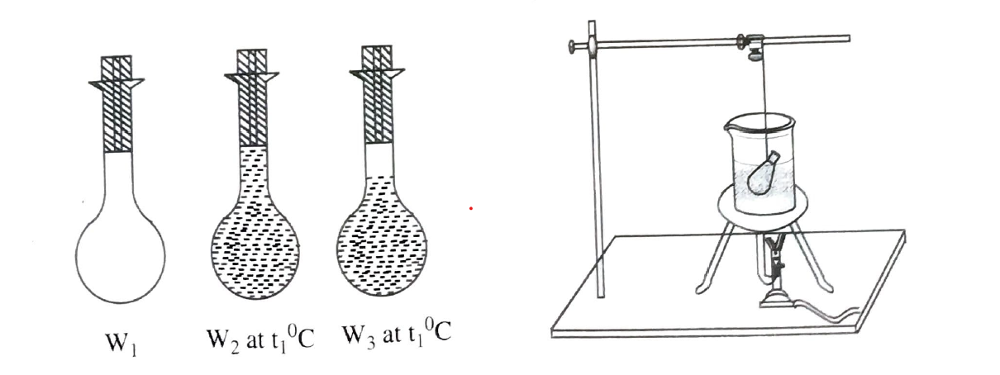

To determine the coefficient of apparent expansions of a liquid using specific gravity bottle method and to calculate the co-efficient of real expansion of liquid.
Specific gravity bottle,physical balance,weight box and a thermometer.
Liquid do not possess definite shape,they take the shape of the container.So, they are heated in a container.Hence the liquid have two expansions,one real expansion and other, the expansion with respect to container,which is apparent expansion.
The coefficient of apparent expansion of a liquid is defined as the ratio of the apparent increase in volume for 10C rise of temperature to the orginal volume of the liquid.
if V1 and V2 are the volumes of a given mass liquid at t10C and t20C respectively,then the coefficient of apparent expansion of the liquid is given by
\(\gamma _{app}=\frac{(v_{2}-v_{1})}{v_{1}(t_{2}-t_{2})}\)
Relation between \(\gamma _{a}\, and\, \gamma_{R}\,is\,\gamma_{R}=\gamma_{a}+3\alpha _{g}.where\, '\alpha _{g}'\) is the coefficient of linear expansion of the material of the container.
Specific gravity bottle is small glass bottle with lomg neck and fixed volume fitted with a glass stopped,with capillarybore.The bottle can be filled with the given liquid. When the stopper is inserted, the excess of liquid above is fixed volume,will flow out through the fine bore in the stopper.
A clean,empty and dry specific gravity bottle is taken and its mass W1 is determined along with its stopper.The bottle is completely filled with the given liquid at temperature t10C without any air bubbles and its mass W2 is determined.The bottle is suspended upto its neck in a water bath with help of a thread.The bath is heated gradually.Due to expansion,the liquid oozes out through the bore in the stopper. Remove the liquid that oozes with the blotting paper.
After sometime,the water bath attains a constant temperature.Wait for about 5 or 10 minutes until no more liquid oozes out through the bore in the stopper.It indicates that the liquid inside the bottle attains the temparature of water and the expansion is completed.Note the final temperature t2 0C of the water bath. Removed the bottle from the water bath. Allow it to cool to room temperature.Remove the thread and clean the outer surface of the bottle with a piece of cloth.Find the mass W3gm of the bottle with the liquid left over.Tabulate the readings in the table provided and calculated the coefficient of apparent expansion of the liquid using the formula.
\(\gamma _{app}=\frac{(w_{2}-w_{3})}{(w_{3}-w_{1})(t_{2}-t_{1})}/^{0}C\)